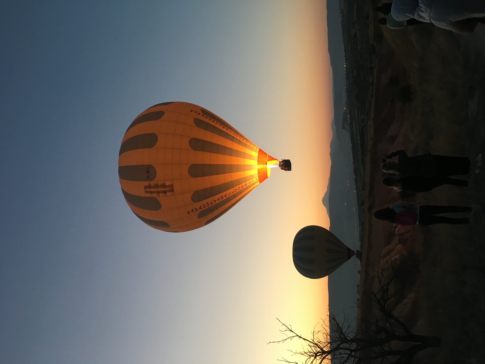

Was ist Turkologie?
Die Turkologie beschäftigt sich mit den Sprachen, Literaturen, Kulturen, Gesellschaften und Geschichten der türkischen und turksprachigen Völker.
Das Fach verbindet Sprachwissenschaft, Literaturwissenschaft, Geschichte, Religionswissenschaft und Kulturwissenschaft und eröffnet Perspektiven von Anatolien bis Zentralasien.
Studierende lernen unterschiedliche Regionen, historische Entwicklungen, kulturelle Traditionen und moderne gesellschaftliche Prozesse kennen.
Einblicke in Sprache, Geschichte und Kultur
Einige Eindrücke aus der Türkei und aus dem weiteren Forschungsfeld der Turkologie.



🏛 Offizielle Informationsquellen
Bitte prüfen Sie zuerst die offiziellen Seiten der LMU und des Instituts:
Neu hier?
Wenn Sie sich zum ersten Mal für Turkologie interessieren, beginnen Sie mit den offiziellen Informationsquellen oben. Die folgenden Antworten erklären typische Fragen in einfacher, orientierender Form.